An Honest
Interface
Rethinking Environmental Awareness in EVs
Introduction
In this project, I am designing an honest interface for a Polestar car, one that shows the hidden environmental impact of using electric vehicles.
My goal is not to offer a solution, but to create space for drivers to reflect and think about how their actions affect the environment.
I have used a Critical Design approach because it helps question what already exists. As Malpass (2013) puts it, critical design creates some distance between the object and the user, making room for reflection and new perspectives.
Design process
What was the inspiration?
We know that vehicle electrification is only the beginning. Many car companies are trying to create environmentally friendly cars that have less impact on the environment.
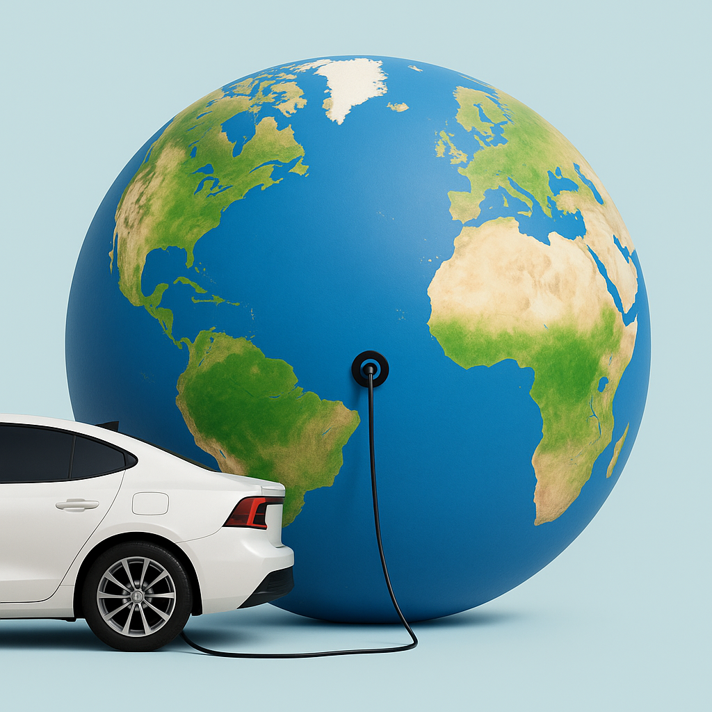
What inspired me is that there is still information hidden in car interfaces regarding the environmental impact of EVs, and Polestar is one of those companies.
While reading Polestar's 2024 Sustainability Report, I found information that inspired me to conduct my research. Polestar performs better in terms of climate action compared to other car companies, this was reason for me to focus on Polestar instead of other vehicle company.
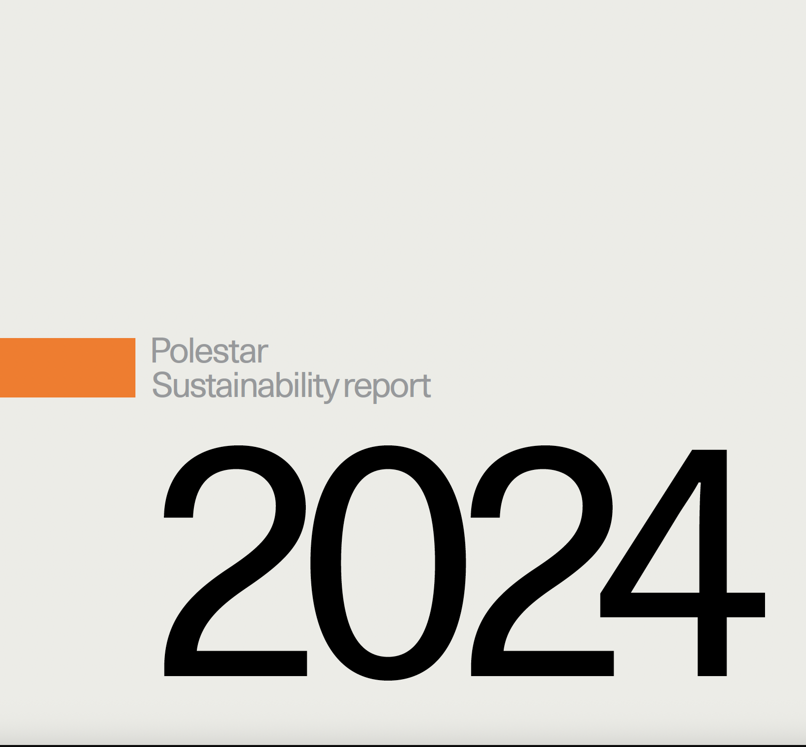
According to Michael Lohscheller, He was proud to say that Polestar's car had reduced their relative carbon footprint with 25% since their base year 2020. That is one quarter of all emissions per vehicle sold. (Polestar, 2024, p. 6).
Michael Lohscheller
Chief Executive Officer statement
It is nice to see that Polestar is making efforts to produce an environmentally friendly car that is less harmful to the environment compared to other cars. However, it was also stated in the report that
"Polestar 4 isn't just our fastest car to date, with a 0-100 acceleration of 3.8 seconds, it also has the lowest carbon footprint of any Polestar car" (Polestar, 2024, p. 5).
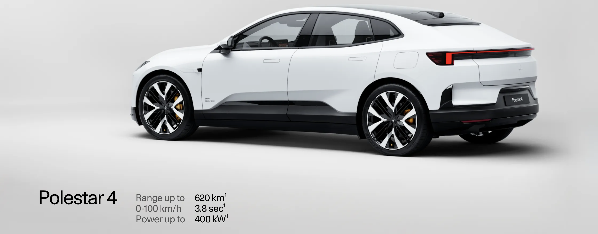
The critical design angle is that, despite Polestar's transparency and its efforts to make its cars more environmentally friendly, the company still produces vehicles that encourage fast driving.
"Fast driving leads to tire wear, increased driving, and the emission of particles (such as microplastics), ultimately worsening air pollution" (Giechaskiel et al., 2024).
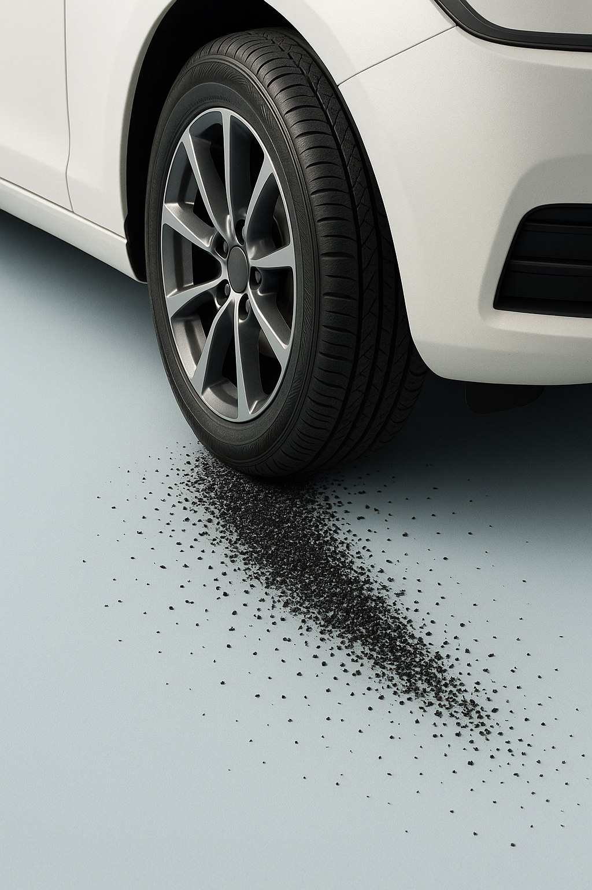
Polestar mentioned about the negative impact of electric vehicle battery production on living organisms and food resources is significant due to the release of toxic chemicals and heavy metals during the mining of raw materials such as cobalt, lithium, and nickel (Polestar, 2024, p. 38).
My critical side on this that although Polestar's transparency in their report but at the same time Polestar hide this damage in their interface.
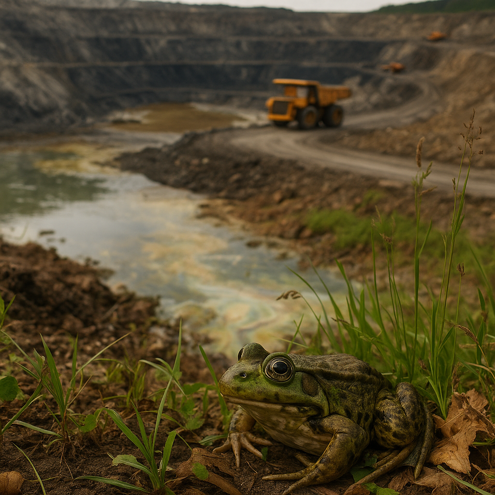
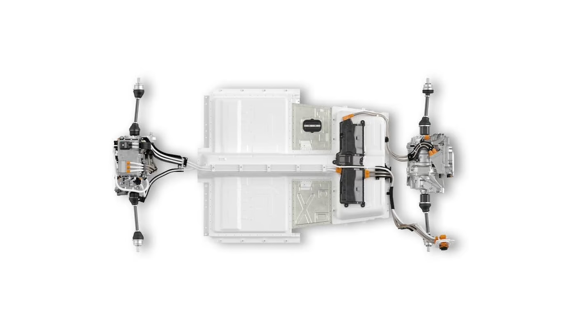
Electric vehicles produce non-exhaust emissions, brake dust, tire wear, and toxic mining pollution (Polestar, 2024, p. 38).
Even if Polestar mentioned this information in their report, it is still hidden in their interface.
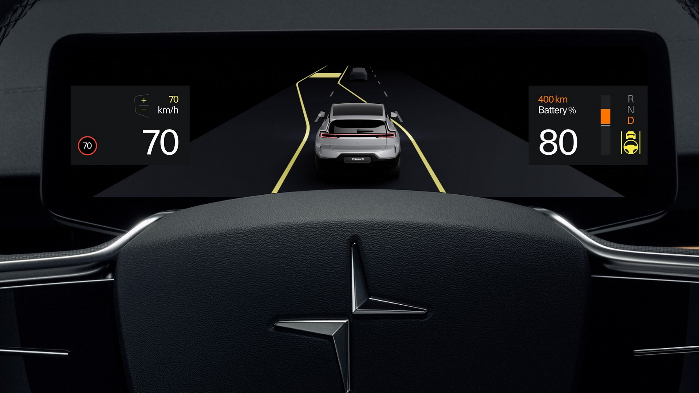
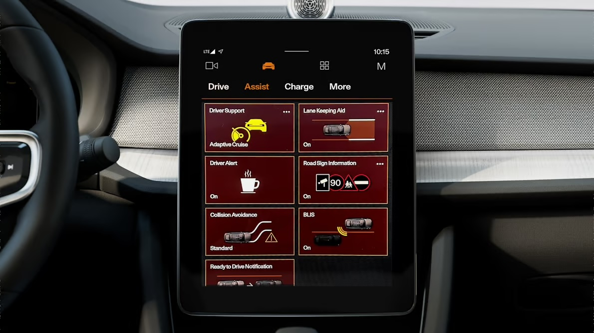
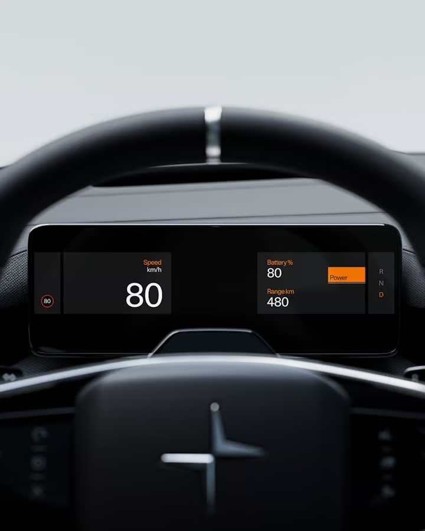
In both these pictures UI focused on comfortability and speed but it missing the EVs impact on the environment.
The map is totally green which it feels that EV does not has any impact on the environment.
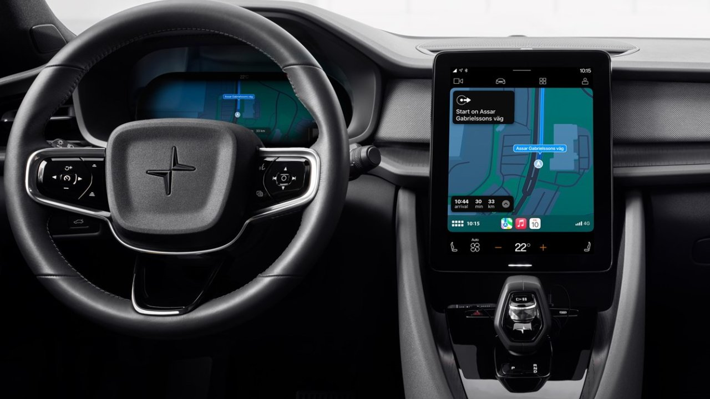
It shows in this picture the trip navigation from Gothenburg to Stockholm, the passenger did not get any warning or advice to consider the traveling impact on the environment.
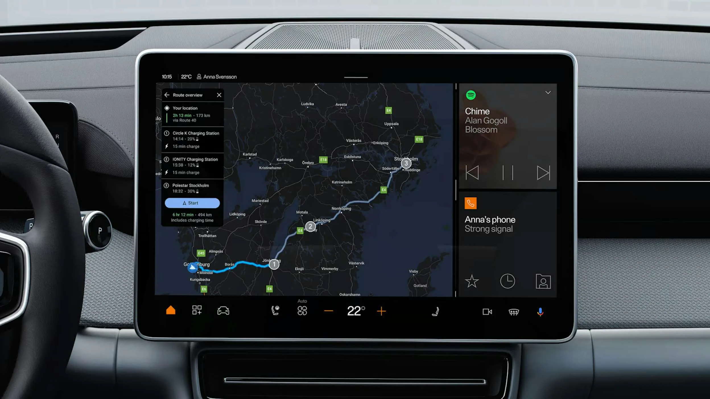